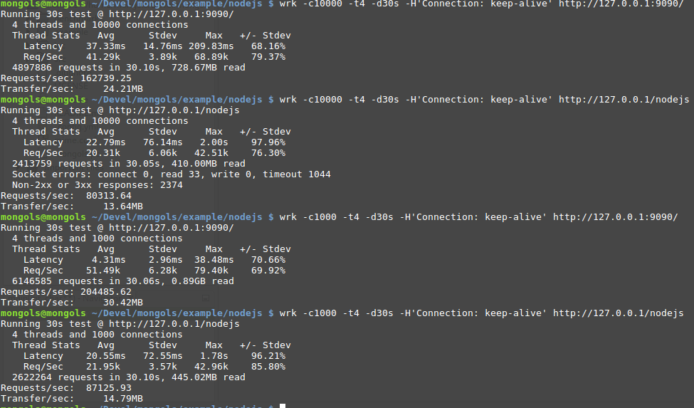

代理服务器
tcp_proxy_server 主要是为需要负载均衡的场景准备的。
它既能做四层tcp负载均衡，也能作七层http负载均衡。内置负载均衡算法为轮询法。
HTTP 七层负载均衡
来看一个http反向代理的例子：
#include <unistd.h>
#include <sys/wait.h>
#include <sys/signal.h>
#include <sys/prctl.h>
#include <mongols/util.hpp>
#include <mongols/tcp_proxy_server.hpp>
#include <cstring>
#include <iostream>
#include <functional>
int main(int, char**) {
// daemon(1, 0);
auto f = [](const mongols::tcp_server::client_t & client) {
return true;
};
auto h = [&](const mongols::request & req) {
return true;
};
int port = 9090;
const char* host = "127.0.0.1";
mongols::tcp_proxy_server server(host, port, 5000, 8192, 0/*2*/);
server.set_enable_http_lru_cache(true);
server.set_http_lru_cache_expires(1);
server.set_default_http_content();
//see example/nodejs
server.set_backend_server(host, 8888);
server.set_backend_server(host, 8889);
if (!server.set_openssl("openssl/localhost.crt", "openssl/localhost.key")) {
return -1;
}
// server.run(f,h);
std::function<void(pthread_mutex_t*, size_t*) > ff = [&](pthread_mutex_t* mtx, size_t * data) {
server.run(f, h);
};
std::function<bool(int) > g = [&](int status) {
std::cout << strsignal(WTERMSIG(status)) << std::endl;
return false;
};
mongols::multi_process main_process;
main_process.run(ff, g);
}
上例以多进程方式运行一个http反向代理服务器，服务器本身监听9090端口，代理两个后端服务器，后端服务器端口分别是8888和8889。如果访问后端需要安全连接，可通过set_backend_server的第三个参数（bool值）进行配置，默认是false即无需使用安全连接。
两个后端服务器都是输出helloworld的nodejs程序，代码很简单：
var http = require('http');
var port = 8888;//8889
http.createServer(function (request, response) {
response.writeHead(200, {'Content-Type': 'text/plain'});
response.end('Hello World\n');
}).listen(port);
console.log('Server running at http://127.0.0.1:'+port+'/');
同样的后端，同样多的工作进程，如果比较于nginx的proxy_pass方案，无论是否开启缓存，mongols的并发性能都要强于nginx：

实际上，从 web server 到 reverse proxy，对比于mongols，nginx其实是一款很慢的服务器软件。
缓存加速
仅对http代理有效。
tcp_proxy_server通过lru算法+过期时间的策略实现加速。因为缓存在内存中，非常快。只有当请求方法、URI和参数都相同的请求，才会对应到同一个缓存内容。
安全防护
所有对tcp_server的安全配置对tcp_proxy_server也是有效的。当然，你也可以更进一步，自行配置更细致的安全防护。
tcp_proxy_server可配置连接级的安全防护，通过run方法的参数。该参数是一个需要返回布尔值的functional,返回false则意味着直接关闭连接。
该functional以类client_t为参数。开发者可从该参数获取连接的系统唯一标识符sid，连接建立时间t，该连接已经发送数据的次数count，该连接的ip，以及服务器保持在线的连接总数u_size。有了这些量，开发者很轻易即可写出负责安全防护的functional,比如上例中的f可重写如下:
auto f = [](const mongols::tcp_server::client_t & client) {
if(client.ip=="x.x.x.x"){
return false;
}
if(client.u_size>100000){
return false;
}
return true;
};
现在，f表示：如果服务器总连接数超过100000,或者当前连接ip为x.x.x.x，就关闭当前连接。
如果开启http代理模式，还可以配置请求过滤的functional。例如上例中的h，可根据HTTP请求头信息实现自定义过滤。
关闭连接时，对tcp代理返回close字符串，对http代理返回403错误。开发者可通过set_default_content方法设置默认返回值。
TCP 四层负载均衡
例子:
#include <unistd.h>
#include <sys/wait.h>
#include <sys/signal.h>
#include <sys/prctl.h>
#include <mongols/util.hpp>
#include <mongols/tcp_proxy_server.hpp>
#include <cstring>
#include <iostream>
#include <functional>
int main(int, char**) {
// daemon(1, 0);
auto f = [](const mongols::tcp_server::client_t & client) {
return true;
};
int port = 9090;
const char* host = "127.0.0.1";
mongols::tcp_proxy_server server(host, port, 5000, 8192, 0/*2*/);
server.set_enable_tcp_send_to_other(true);
//see example/nodejs
server.set_backend_server(host, 8886);
server.set_backend_server(host, 8887);
if (!server.set_openssl("openssl/localhost.crt", "openssl/localhost.key")) {
return -1;
}
server.run(f);
}
set_enable_tcp_send_to_other决定消息是否转发其他在线客户端。